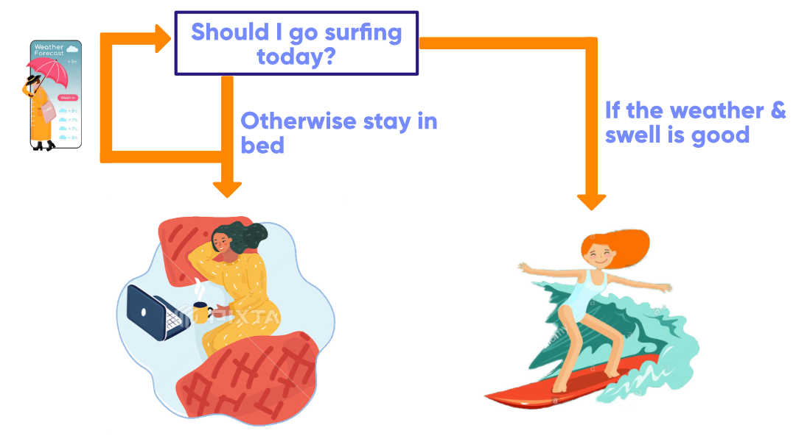
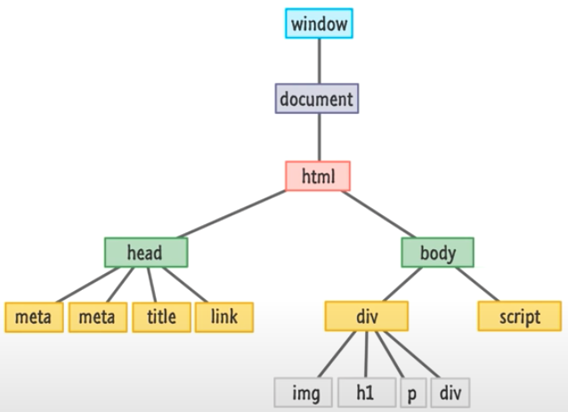

JavaScript & the DOM
The holy trinity - HTML, CSS, & JavaScript
HTML, CSS, and JavaScript are the core building blocks of almost every webpage you see and make up what I like to call the holy trinity of the internet. HTML provides the basic structure and content of sites, while CSS controls the styling, and JavaScript controls the behaviour and interactivity of websites.
Think of a webpage as a house, and every house needs the structural foundations or bones to stand up right, think of this as HTML. Once we’ve built the house’s structure we need to add some interior design such as colours, paintings, furniture to give our house some personality, think of this as CSS. Now that we have the structure and aesthetics of our house, we need to make it more functional and liveable, so adding electrics, heating, and running water to our house, think of this as the JavaScript.
As you see in our house analogy, building a website is much like building a house and you need all 3 of the building blocks (HTML, CSS, JavaScript) to create a functioning, structurally sound and good looking website!
Control Flow & loops
Control flow is the order in which the computer executes statements in a script. This means that when the computer reads a script it reads it from start to finish, and the order of the statements will dictate how the computer executes what you want to do. Think of control flow as reading a novel, you could read the book backwards and the sentences in jumbled order but you wouldn’t really understand what’s going on, so you read the book from start to finish and each sentence in their correct order to be able to fully understand the novel, similar to control flow.
An example of control flow when programming are if/else statements. With an if/else statement, the program will execute if the condition evaluates to true, otherwise if its false it will do something else. Let’s say we want to wake up in the morning and check the weather forecast to decide whether we should go surfing or not; if the weather is good we decide to go surfing and if the weather is not good we will stay in bed.
Loops in JavaScript offer a quick and easy way to do something repeatedly. If we go back to our surfing analogy, we could also repeatedly check the weather forecast every hour for the next 4 hours to see if the conditions could still allow us to go surfing or not.
ARRAYS VS. OBJECTS
Both arrays and objects are special data types in JavaScript that can be used to store a collection of data that can be mutable.
ARRAYS
Arrays can be used when we want to create and store a list of multiple items in a single variable.
For example, if we want to create a variable called fruits with a list of different types of fruit stored in it. This would have the following syntax:
var fruits = ["banana","pineapple","watermelon","mango"]
We can also access specific data from arrays using zero-based indexing. This means that the first item in an array has an index of 0. For example, we want to access "watermelon", the third fruit in our array we would write:
fruits[2] // returns "watermelon"
Items can also be added or removed from array using push() or pop() respectively. Let's say we want to add 'dragonfruit' and remove 'banana' from our fruits variable, we would write:
// adds item to the end of an array
fruits.push('dragonfruit')
// removes item from the end of an array
fruits.pop()
OBJECTS
Objects are used to represent data that can be defined by a certain set of characteristics. These characteristics are called properties that consists of a key and a value.
For example, we could create an object on data we have collected about dolphins. This would have the following syntax:
var dolphins = {
species: "maui dolphin",
age: 3,
size: 1.5,
endangered: true
Properties in objects can also be accessed, added, changed, and removed by using either the dot .notation or bracket [notation].
To get the value of the species property in our dolphins object we would write:
dolphins.species // returns "maui dolphin"
dolphins['species'] // returns "maui dolphin"
If we wanted to change the endangered status of the dolphin to false we would write:
dolphins.endangered = true
And if we wanted to add a new property like skinColour to our dolphin object we would write:
dolphins.skinColour = ["grey", "white"]
Finally we could also remove the age property from our dolphins object like this:
delete dolphins.age
FUNCTIONS & WHY THEY'RE USEFUL
A function is a block of code designed to perform a particular task or calculate a value. The great thing about functions is that every function you make can be reusable and executed as many times as you want in your script. Functions are also a great way to reduce the need to repeat large chunks of code and are a way to give concise human-readable names to complex sections of code.
A function is declared using the function keyword and is comprised of:
- The name of the function
- A list of parameters (can be one, many or none)
- The code to be executed by the function
- The function is executed when it has been called
Function syntax:
function name(parameter1, parameter2, parameter3) {
// code to be executed
}
name(parameter1, parameter2, parameter3) // calling the function
Let’s look at an example, maybe we want to calculate the distance our car travels when we input it’s speed and time into our function. This is how we would write it:
function carDistance(speed, time) {
return speed * time;
}
carDistance(50, 2) // returns car distance of 100
THE DOM & DEVTOOLS
The Document Object Model, also known as the DOM in programming lingo, is a programming interface for HTML. The DOM is like the glue that holds HTML, CSS, and JavaScript together and it translates the content of each of these languages to create a standardised object that we can access and easily modify. All webpages rely on the DOM to display and function properly.
The DOM is constructed as a tree of HTML objects:
We can use JavaScript & web developer tools (DevTools) to manipulate and interact with the DOM to change, add, or delete HTML objects.
A simple example of using DevTools to manipulate objects in the DOM can be seen in the video below: